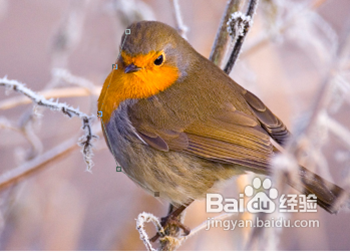

任务一：使用快速选择工具
- 1、打开文件
- 2、点击使用快速选择工具
- 3、然后用鼠标左键在图片上想抠出来的区域拖动，直到选择好你想选择的区域之后，点击ctrl+c组合键复制。然后新建一个空白图片。
- 4、在此空白图片上粘贴，就出现了你刚才抠出来的图片
任务二：使用钢笔工具
- 1、点击使用钢笔工具
- 2、用钢笔工具在图像的边缘定出若二个点，如图所示，确定完成之后按crtl+回车键选择，然后复制，新建空白图片。
- 
- 2、在空白图片中粘贴，刚才抠出来的图便出现了。需要注意的是，定出的点越多，扣出的图越准确！